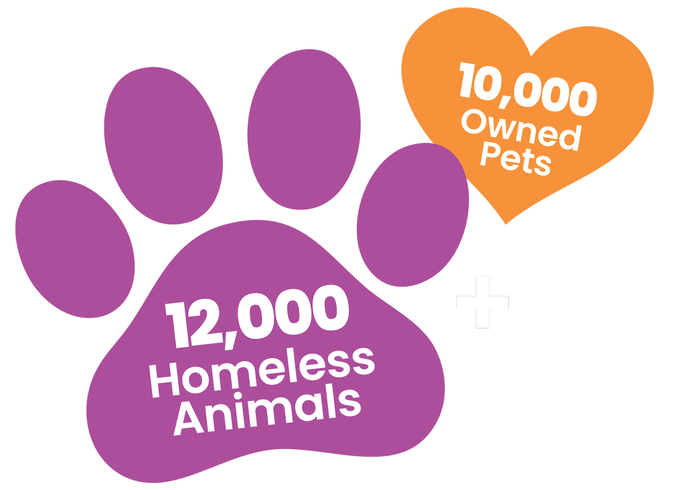
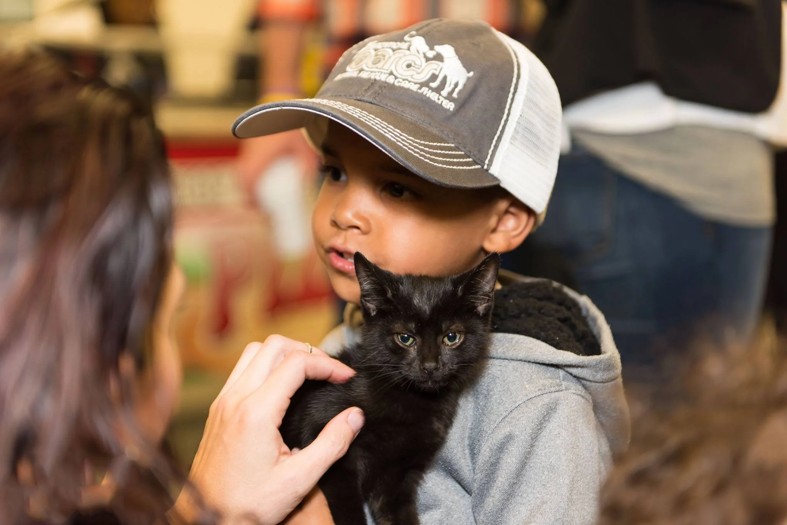
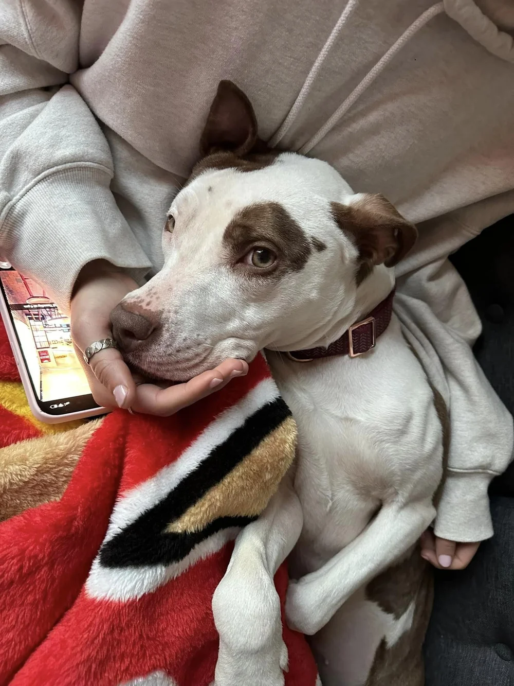
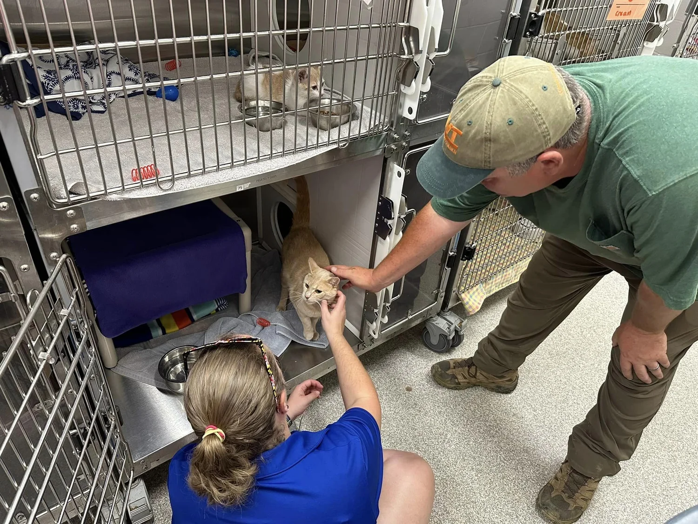
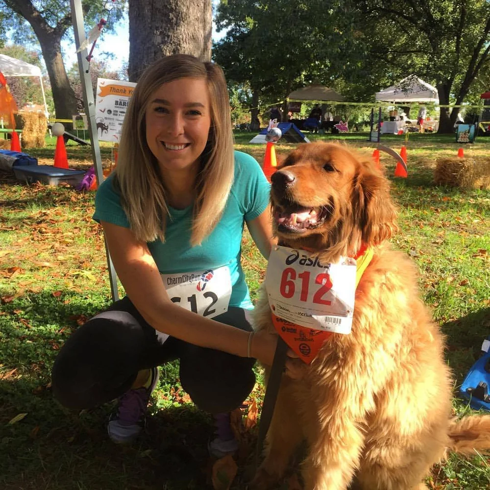
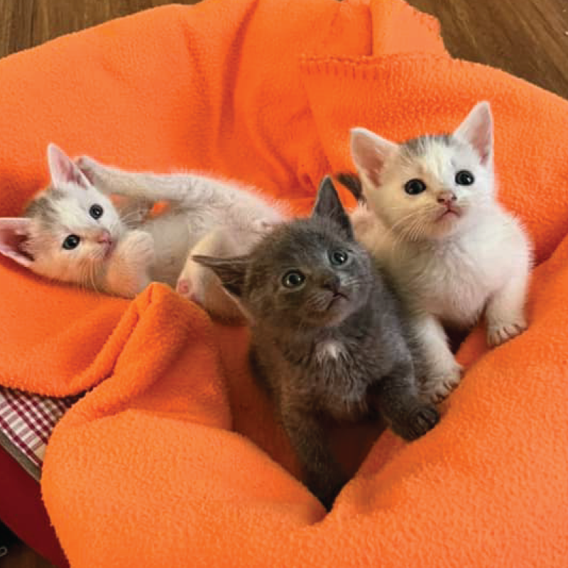

They’re Counting on Us.
BARCS is an open-admission, high-volume shelter serving more than 12,000 homeless animals each year. Beyond the shelter, we also support thousands of owned pets and their families through veterinary care, supplies, safety-net programs and other services designed to keep pets in the homes where they are loved. All made possible by your donations.
Welcome To The Family.
- Adoptable dogs
- Adoptable cats
- Adopt a 'working cat'
- Other adoptable animals
- Emotional support dog program
When you adopt from BARCS, you save two lives by taking one animal home and opening the kennel for the next animal in need of a safe place to go.

Our Greatest Needs Right Now:

Fostering Adult Dogs
Give a shelter dog the comfort of home while they wait for their next chapter. Fostering saves lives, creates kennel space, and helps dogs show their true personalities.

Weekday Volunteers
Our team is understaffed, and volunteers help ensure every animal still feels loved and cared for. From walks and enrichment, their time makes a meaningful difference every day.

BARCStoberfest
Back for our 22nd year in Patterson Park! BARCStoberfest is our signature event that brings our community together for a fun-filled day that raises lifesaving funds for BARCS.

Fostering Kittens
Kitten season brings hundreds of tiny, vulnerable kittens to BARCS. By fostering, you give them the warmth, care, and time they need to grow strong and get ready for loving homes.
General Animal Care Fund
The General Animal Care Fund is the foundation of BARCS’ lifesaving work, giving us the flexibility to use your gift wherever it is needed most. It supports the care of approximately 12,000 animals each year, along with essential programs like adoptions, foster care, training, and enrichment. Unrestricted gifts help us respond to changing needs and ensure every animal who comes through our doors gets the care they deserve.